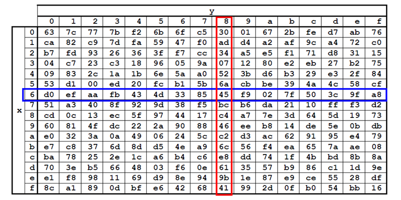

require('crypto')is a human right
cascadiafest
2016
My talk today is going to cover a lot of history, some math, and a couple of code examples
the title of the talk is about how human rights relates to a part of the node core
UN Declaration of Human Rights
Article 12
No one shall be subjected to arbitrary interference
with their privacy, family, home or correspondence,
nor to attacks upon their honour and reputation.
Everyone has the right to the protection of the law
against such interference or attacks.
here is a relevant passage from the UN declaration of human rights that talks about privacy and security
there are a lot of versions of this in different rights declarations, europe has one, the us, canada has verbiage about this
I like the UN version because it uses the word attack, which is really strong language. no where else in the document do you get such strong language. You mostly see words like deprived, and persecution.
While I'm going to talk a lot about people starting businesses and patent fights between academics, the people doing the fighting are fighting for the rights of everyone to be secure in their correspondence.
the hero
the hero of the story today is the average person... citizens, you folk, all of us in this room
the villains
the villains are the intelligence agencies, military generals, folks like that
3000 BCE - 1949 AD
it's hard to talk about early crypto, because so much of it is so bad
not much is very notable
every system was fundamentally flawed in one way or another
weak
protocols
they relied on weak protocols
it didn't matter matter how good the scrambling was, the impelementation was poor
a lot of the time the systems depended on keeping the design secret
or keeping the code book out of your enemies hands, which is tough when your enemy is willing to shoot you
once these systems were broken not only are some of the future messages exposed, all the previous messages are exposed
worse still, someone can now impersonate soldiers in the field until you get a new codebook out
FIRST COMPUTERS
some of the first really big computers were built to exploit the weaknesses in early crypto
for example, the known plaintext attack - one side would lay mines then wait for the other side to clear the mines then send an encrypted communication saying "all clear"
if you could get a message you knew said "all clear" then you could reverse engineer the secret codes for the day
information theory
1949
making ciphers was hard until 1949
the language necessary to describe modern cryptosystems was invented in 1949
mathematicians formalized the tools necessary to describe information transfer, storage, things like compression
1951 - 1970
Around the same time in 1951 the NSA is founded.
During the period between 1951 and about 1970 the NSA is feeling good.
Anyone who wants to work on cryptography goes and works for them.
They control the funding mechanisms for cryptography.
They can also delcare patent applications to be classified in the name of national security.
All the knowledge about serious crypto is kept by them.
They built cryptosystems to be used by spies and the military.
If you wanted to work on these things you needed to agree with the philosophy behind those organizations.
early 70's
But During the early 70's banking was becoming computerized, and commerce demanded a way to perform secure wire transfers.
1975
DES
In 1975 we get DES.
DES is the first serious attempt at a widespread standard for data security.
It was successfully impelmented in chip, which made it easy to sell and use.
HBO used DES to scramble the signal when transmitting it over satellite.
Even though the NSA was involved in the design of the cipher, the only real weakness in DES is that it shipped with a 56 bit key strength.
The designers wanted a 128 bit length key, but hardware concerns limited it to 64 bit, and government interference got it down to 56 bits.
strength
Each single bit reduction cuts the strength in half. 100 bit is twice as strong as 99 bit. 99 bit twice as strong as 98.
So think about the reduction in strength from 128 to 56.
symmetric cryptography
DES is a type of symmetric cryptography
plain text
key
encipher
cipher text
decipher
key
plain text
Symmetric cryptography is the easier to understand type of encryption.
You have a key and an scrambling algorithm.
You combine your data, the key, and the algorithm and you scramble your data.
The recipient takes the same key and a reverse process to unscramble the data to recover the plaintext
If you can keep the key secret, this works really well.
const c = require('crypto') // es6... (e_e)
c.getCiphers()
// (partial results)
[ "aes128","aes192","aes256","blowfish",
"camellia128","camellia192","camellia256","cast",
"des","des3","desx","idea","rc2","rc2-40-cbc",
"rc2-64-cbc","rc4","rc4-40","seed" ]
DES is still around.
You can find it and other symmetric ciphers in nodejs by running getCiphers()
This functionality is available to node because we link OpenSSL during compilation.
Node crypto is powered by openssl.
☎☈☏
secure telephony
Big Mainframes needed secure communications.
They also needed a way to store information securely at rest.
IBM Researchers with the assistance of the NSA created DES, a block-cipher, which took a fixed block of bytes, and performed multiple rounds of permutations.
Specifically the permutations are multiple rounds of shuffling and substitution.
s-box

This is the hardest to understand part of modern symmetric encryption.
Each round of encryption you take a chunk of bytes, and perform a lookup operation with the values themselves.
You take your current value, and use it to find the new value.
Your chunk is 68. Go find (6, 8) > 45. Now next round your chunk is 45.
Do that 12 or 16 times combined with a shuffle operation after each step and you have the makings of a strong block cipher.
These s-boxes are hardcoded, and the values in the s-boxes are what makes them strong.
The NSA provided the s-boxes for DES.
Since the operation is so complex there is no way to verify that there is no hidden trap door in the values
Does the NSA have a special set of decoder s-boxes that allow them to more quickly guess your key?
des example
var crypto = require('crypto'); var assert = require('assert')
var key = 'p4ssw0rd'; var message = 'hello cascadiafest!'
// encrypt
var cipher = crypto.createCipher('des', key)
var cipher_text = cipher.update(message, 'utf8', 'hex')
cipher_text += cipher.final('hex')
// decrypt
var decipher = crypto.createDecipher('des', key)
var plain_text = decipher.update(cipher_text, 'hex', 'utf8')
plain_text += decipher.final('utf8')
assert.equal(plain_text, message)
So back to DES... it was a hit, we still use a version of it today.
Even though the NSA reduced the key size in their recommendation, it was secure and widespread.
It put cryptography outside of the realm of the military and spies.
late 1970s
This got everyone thinking hard about everything to do with codes and ciphers.
Where can we apply these ideas and make money?
1976
It wasn't all commerce and banking. A bunch of these types of folks got involved.
Californians...
Whit Diffie and Martin Hellman published a seminal paper on public key cryptography.
symmetric asymmetric encryption
They and a bunch of smart folks focused on the most obvious limitations of symmetric crypto which is that no matter how strong the cipher is your key needs to be stored in more than one place and can be leaked.
Their solution is to break the key up into two parts.
Where one part could be leaked, or even publicized. And one part would be kept secret.
All you would need to encrypt a message for that person is their publicly available information.
one way functions
the secret to this lies in a concept in math called the one-way-function
a = b + c
b = a - c
c = a - b
easy
this isn't a two-way function, that's something else entirely, these are examples of not one-way-functions
given components of one equation you can derive all the other fields by performing operations from thE inverse property of that operator
easy stuff
ax = c
given A and C
solve for X
not easy
this becomes an issue when your equation looks like this
that exponent, x, really complicates matters
there isn't an efficient one-step solution to this problem, and that's what they leveraged
diffie-hellman key generation
gx mod p = public
you are given G and P
choose a large X
it is your secret
this is the diffie hellman key genearation,
the first really successful public key encryption algorithm
g and p are agreed upon by both parties, and everyone picks their own value for X and keeps it secret
then they run the X through the equation and publish the result, the public number
what is mod? I'll show you!
math
5 mod 2 = 1
2 √ 5 = 2, remainder 1
6 mod 2 = 0
2 √ 6 = 3, remainder 0
really quick, mod describes the remainder of a division operation
so five mod two is 5 divided by 2, which is two, with the remainder is 1
4 mod 2 is 4 divided by 2, which is 2 remainder zero
3 mod 1 is one
2 mod 2 is zero
g x mod p = pub1 g y mod p = pub2
pub2 x
mod p =
c
pub1 y
mod p =
c
so this is the key exchange
one person picks a value for X and publishes the pub1 value
another person picks their own exponent value, Y, and publishes the pub2 value
person 1 takes pub2 and their exponent and arrives at c
the other person does the same but with their respective bits and arrives at the same C value
the only way for a 3rd party to derive C given PUB1 and PUB2 is to guess X or Y
if your X or Y values are big enough that's just infeasible
gx mod p = a
const crypto = require('crypto');
// Generate Alice's keys...
const alice = crypto.createDiffieHellman(2048);
// or const alice = crypto.getDiffieHellman('modp14');
const alice_key = alice.generateKeys();
// a = (g ^ x) mod p
alice_key.getPublicKey() // a
alice_key.getGenerator() // g
alice_key.getPrivateKey() // x
alice_key.getPrime() // p
// shared secret, c
alice_key.computeSecret(bob.getPublicKey())
this is all that information I just described in node.js code
diffie hellman does not have many components
publishing your diffie hellman public key is really just posting the result of a math equation
shared secret
Diffie Hellman itself does not do any encryption.
It just allows two parties arrive at a secret shared number given each others public numbers.
Asymmetric cryptography solves the problem of having to transmit your symmteric key to the other party, at least in the clear.
Your shared secret is the key to your symmetric cipher.
All modern cryptosystems are combinations of symmetric and asymmteric crypto.
diffie-hellman 1976
rsa 1977
(dsa 1991)
After the Diffie Hellman key exchange paper was published, the RSA algorithm was published.
RSA took DH a few steps further beyond key generation and exchange protocol.
It also defined an encryption and decryption mechanism.
This slide also honorably mentions DSA which is a signature only algorithm invented by the NSA in 1991
RSA Security Inc
founded, 1982
In 1982 RSA founded to commercialize public key encryption.
They negotiated use of the patent from MIT and set to work.
The patent on RSA expired in september of 2000.
1983
hardware company
They felt they had a problem.
Customers could not understand their product.
Symmteric encryption is easy, a key locks and unlocks a door.
Asymmetric encryption is college level math.
There are mulitple keys, and multiple steps to using them.
Your key becomes a different key when used in someone else's lock.
Everyone shares a different secret.
RSA wanted to simpifly things. Put it on a chip. Ship it in a box.
It didn't work.
It would have been one of the most complicated single chip design by a factor of 10
it came off the line and didn't work at all
1985
software company
They shifted away from chip making and focused on licensing the
technology in other products. Your email would be protected by RSA and
there would be a sticker on the box for your email program, RSA Inside.
CT = PT e mod n PT = CT D mod n public key (e,n)
private key (d)
This is the RSA algorithm.
RSA is different from diffie-hellman in that it doesn't rely on the shared secret model.
RSA has a key generation routine, which I'm not describing here.
RSA ships with encryption and decryption operations.
To use RSA you just generates a random string of data.
That random string is your symmetric key.
Then you encrypt that string using the RSA public key of your recipient.
That random string of data is the key to your symmetric cipher.
The recipient recovers the symmetric key using their private key, and decrypts the data packet.
symmetric
plain text
key
encipher
cipher text
decipher
key
plain text
asymmetric
plain text
public key
encipher
cipher text
decipher
private key
plain text
Laid out like this you can see why one is called asymmetric.
Where you would most often find visible asymmetric crypto is in email.
You would take someone else's public key and encrypt a message only they could decrypt.
The recipient takes their private key and deciphers the data to recover it.
When you do that, if you still want to make the message readable by you - say in your sent folder - you encrypt two copies. One with their public key, and one with yours.
sign & verify
plain text
private key
sign
signature
verify
public key
plain text
Another feature of RSA is the signature and verification routines.
Sign and verify are kind of the reverse of what I just described.
Instead of you encrypting a message for me using my public key, I encrypt a message for you using my private key.
You then verify I sent the message by decrypting the signature with my public key.
Only someone with my private key could make a signature that is verified with my public key.
sign and verify example
const crypto = require('crypto'); const fs = require('fs')
var private_key = fs.readFileSync('./4096_private.dat')
var public_key = fs.readFileSync('./4096.pub')
var message = 'secret message'
var sign = crypto.createSign('RSA-SHA256')
sign.update(message)
var signature = sign.sign(private_key, 'hex')
var verify = crypto.createVerify('RSA-SHA256')
verify.update(message)
assert.equal(verify.verify(public_key, signature, 'hex'), true)
Here is what I just talked about as code in nodejs.
You load the keys, from disk. You have a message string.
you call the sign method and pass your private key
You send your message, your signature, and your public key to the other party
they then verify the message using the public key and the signature
generate keys
# generate private key
openssl genrsa -out 4096_private.dat 4096
# generate public key
openssl rsa -in 4096_private.dat -pubout > 4096.pub
node core doesn't let you create rsa keys
you need an addon to make new rsa keys
it expects you to have run the openssl command and use static keys
1989
lotus notes
Back to the story...
In 1989 RSA is licensed to be used in Lotus Notes.
They wanted to use a combination of RSA and DES for the encryption but the NSA would not allow them to export DES.
So the RSA people invented the RC-2 cipher at two strengths, 64bit and 40 bit.
const c = require('crypto') // es6... (e_e)
c.getCiphers()
// (partial results)
[ "aes128","aes192","aes256","blowfish",
"camellia128","camellia192","camellia256","cast",
"des","des3","desx","idea",
"rc2",
"rc2-40-cbc",
"rc2-64-cbc",
"rc4",
"rc4-40",
"seed" ]
Remember this slide where I show you how to list the ciphers?
Notice the 40 after RC2 and RC4? Those are export strengths. 40 bit.
That is the fingerprints of the politics of the early 90s baked into your node dot js
See the 256 on aes? Those are comparable numbers. 41 is twice as strong as 40, all the way up to 256.
If the fight against strong encryption is lost you will see the numbers in getCiphers get smaller
1991
pgp
we're kind of blasting through the timeline here because you would not believe how long it took for them to write and release this software
but pgp version 1.0 released using a combination of RSA and a symmetric cipher called bassomatic
yes from the saturday night live sketch
1992, pgp v2
version 2 used stronger RSA keys and a new symmetric cipher called idea
or international data encryption algorithm that used a 128 bit key and was invented in germany
idea was patented but free for non commercial use, the patent expired in 2012
but just a month later the San Jose customs office opens up a formal criminal investigation
regarding the illegal export of a munitions without a license
then in 1997 the case closes with no charges filed
it's all just threats and intimidation
I had a hard time researching hard concrete details about this talk because there is very little in the way of publicly available court proceedings
You can't find a listing of what was and wasn't considered illegal at the time because it was entirely at the discretion of opaque government entities that would swing back and forth their interpretation of the current state of affairs
the law was being practiced through secret letters and memos
key escrow
so rewind a bit...
it's 1993 so the whole time they are investigating email and software people for their strong encryption the government is pushing their solution for all this mess they have created
the solution is key escrow,
embodied in a device called the clipper chip
a clipper chip or something like it would be built into your phone, and before you could make an encrypted connection with your 2nd party, a 3rd party would be given some or all of the symmetric keys to your encrypted communications
trust us
so if law enforcement needed the contents of an encrypted wiretap
(which would sound like a wall of hissing)
they could supoena the key from the 3rd party and get the information they wanted
the people proposing this idea constantly harp on this idea of "trust us, if you only knew what we knew"
well during this time we got some citizens to review the information the NSA is always teasing
it's bunk
the citizen review panel came back with a big shrug about not much compelling evidence
nope
nobody wanted on this train, not commerce, not the public
not even after the government said consumers could choose who stored their keys
the big idea was that banks would keep them
imagine if your API services involved contacting a bank with every transaction
the real nail in the coffin for key escrow was that the implementations failed miserably under the smallest bit of scrutiny
on the first day looking researchers were able to bypass the mechanisms that enforced the key escow
the first crack meant waiting 40 minutes on hold while the connection was brute forced
all of this was taking place in the media and the court of public opinion
the moment the news cycle shifted to the idea that the clipper chip is broken and key escrow doesn't work the government drops their pressure
liberalization
there is this whole period of liberalization after the clipper is hacked
1996 An executive order comes down that transfers control of crypto from munitions regulators to the commerce department, you just ask for certifications for internal distribution and you are generally granted them
1997 Banks are allowed unrestricted encryption access without key recovery, also you can export 56 bit crypto instead of 40 bit
1998 Al Gore is about to start his campaign for president and they issue a memo basically making it a free-for-all in terms of strength and streamlines the process for export approval
review
crypto is more than just the math, or key generation steps
it's the implementation of a set of protocols that define
key generation,
key distribution,
rings of trust and verification,
handshake protocols,
trusted and untrusted pipes
every step brings with it benefits and drawbacks
you can't just say "Oh I'll use RSA and AES" and leave it at that
all the parties have to agree on every detail or things don't work at all
future versions of software have to support the standard that created old messages or those old messages won't be readable
your encryption protocol also has to work in the real world, on untrusted networks, that time out... so every step in your protocol needs special attention paid as invisible changes in underlying configurations can leave your implementation weak
did your ISP change how packets are routed and now you are leaking your keys?
can your software handle untrusted networks or does it expect everyone to be law abiding
we trust our ISPs to not attack our connections, but that isn't the case for many internet users
Today
Today the attacks don't really focus on the underlying ciphers, they attack the implementation
The FBI didn't ask Apple for some master key.
The FBI asked Apple to build a version of IOS that breaks their implementation.
The people that broke the encryption didn't crack the key so much as remove the negative consequences of guessing too many times
If it had been an updated model the implementation would have been resistant to that attack
Other places are pushing for logging that neturalizes security altogether.
Snoopers Charter in the UK would require you to log all your sessions, every piece of information for every handshake, did you download an icon? That's a unique session key and that needs to be logged and stored for half a year.
In Russia the new law is a year of retention and they are seizing hardware of vpn providers.
they are watching
This is what we are up against.
It is pervasive surveillance.
they will build arrays of antennas in backwater nowheres just to get better coverage of the sky
they are intercepting your data at almost every opportunity
you may trust the intentions of the people at the highest levels of goverment but many programs live in a gray area from previous administrations
just because the new better person is in the white house doesn't mean that general with the nasty motivation has been replaced
real-time attacks
they can attack your implementations in real-time
I wanted to do some live cracking in this talk but I couldn't make it not a waste of time
how many of you already spend a large portion of your lives sitting in front of tasks watching them go to 100% completion
I included code in the repo for the talk that lets you crack your own keys at different strengths so you can do this when there is more time
I will describe what it means to crack some keys
this is a machine built by the EFF to demonstrate how cheap it would be to crack DES
this is how you attack symmteric cryptography, with custom hardware
the hardware searches the key space and compares the output to a set of parameters
if you are expecting to see ascii text you would pipe the output to a detector software and review all the tries that had only ascii
in the repo for this talk I have a DES cracking routine that will do 30,000 keys per second on my fast desktop
this device did 90 billion
cracking DH
diffie-hellman key generation
g x mod p = public
Diffie Hellman is super easy to crack in that all you have to do is guess X, you have a persons public number, g and p
You verify you got X correct by running the equation, and if you get the public number you got X correct
diffie-hellman key generat
g 1 mod p = 998g 2 mod p = 861g 3 mod p = 320g 4 mod p = 118
most everyone uses the same g and p values in diffie hellman
they are literally published as a standard, diffie hellman group 14 specifies 2048 bit values for g and p
this means means you can precompute all the values for X ahead of time
so when you see a public number in the wild you may have already computed the X value and saved it somewhere
super computers
our largest supercomputers spend a lot of time doing this work
odds are some of your most mundane traffic has been cracked by some of the most sophisticated computing rigs, then dropped on the floor
cracking rsa
PT = CT D mod n
private key (d)
public key (n)
n = p * qd = φ(p, q)
cracking RSA is about attacking the key generation routine
I didn't describe the key generation, but it all starts with two big prime numbers p and q
you get your public key by mutiplying them together, and the strength comes from the fact that there are only one p and q for your n
the p and q values are also fed into a function that outputs the private key
so if you can factor N and recover p and q, you can compute the value for D and start decoding traffic
The awful thing is that they don't even need to spend millions of dollars decrypting your stuff.
We transfer it in plaintext in trusted environments.
How many of your services are only secure once they hit nginx?
how can you help?
encrypt everything
in your standups at work ask your peers what are they're doing to encrypt customer data
then tell your customers that you are doing it, write a blog post about it
security is an afterthought to customers, try to educate them
if you are an indie dev, build encryption into your libraries and modules
publicize the fact that your communication layers are encrypted
make it easy for people to load their keys, give them examples
in fact, make it mandatory, throw an error if they don't encrypt
imagine if node dropped support for unencrypted http
tomorrow
I'm not sure really. I just kind of wanted to have this slide and linger a bit...
Quantum Computers are a real thing and they will eventually crack meaningful RSA keys
Bad guys are collecting all the traffic they see and waiting for the day the skeleton key comes along that opens it up.
An email from 10 years ago is still relevant if you are still mad about the thing that happened 10 years ago
All you can do is try to not be an easy target.
most real world attacks are not sophisticated
unpatched servers, someone pops root, grabs some dot env files now they have your aws keys
At the lowest level it is someone's crappy job to hack you.
Some contractor has to pour over your data and find your alternate email address and world of warcraft username
If you make it a little bit harder for them, they will give up
If literally everyone used Tor and PGP and OTR Messaging our intelligence services would invest more money in human resources instead of mass surveillance.
If it wasn't so easy for them to scoop up everything and call it a good day's work they would have better intelligence instead of the deluge of plaintext we provide them